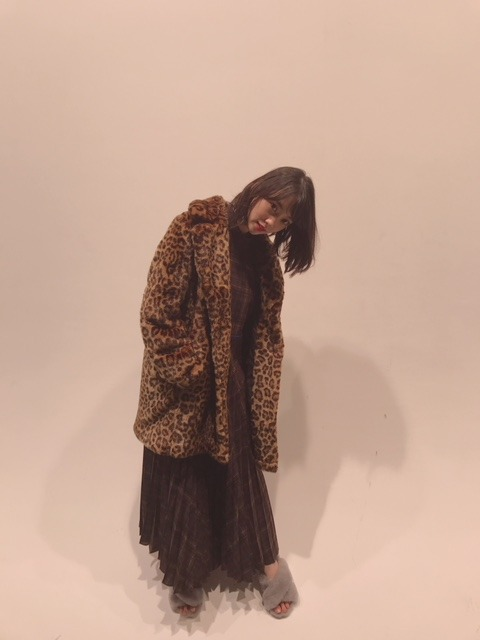
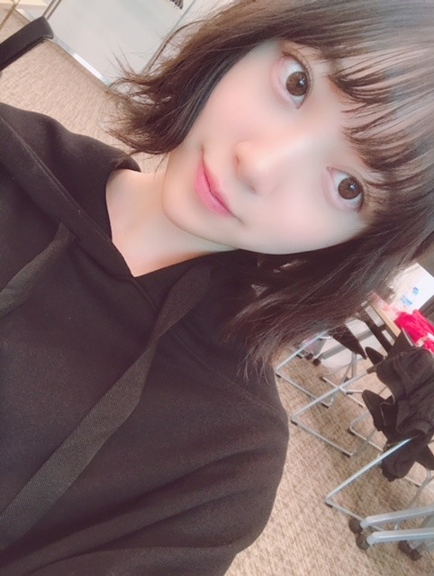
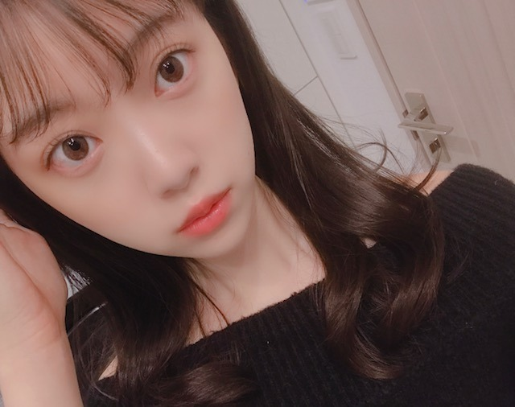

2018/1109Frigirls_blog_♡
ホットギミックで本格的に少女漫画に
はまりまして、最近は
恋するレイジーを読み始めました
おすすめがあれば教えてください☺︎

リクエストをいただいていた
女の子向けブログ。
お待たせしました☺︎
ありがたいことに
握手会にたくさんの女の子が来てくれて
いろんな質問をしてくれるのですが
詳しく答えることができなかったのが
いくつかあったので...
ブログにて失礼します☺︎
好きなブランド・洋服
あまりここ！とは決めずに
ぶらぶらして買っていますが
SNIDEL FURFUR sisterjane
ZARA Rosarymoon UNIQLOはよく着ます
海外に行った時に古着屋さんとか
セレクトショップで大量買いしてしまうので
そういうのも多いかな
ハイブランドは
SAINTLAURENT
j&m Davidson
が好きです

パーカーも好きでよく買います☺︎
これはQALBの！
数年前から
キャップやキャスケット
ベレー帽などのいろんな帽子と
サングラスを集めるのが趣味です
サングラスは空港でも買うし路面店でも
いいのを見つけたら買ってしまいます
かれこれ、10個以上はあるかなー。

ロングの茶髪はいつかしてみたい髪型の1つ☺︎
アッシュ系の髪色にもしてみたいです
ベリーショートも興味あるし...
生きているうちに
いろんな自分に出会いたいです
スキンケア・コスメ
そのときの肌の調子やマイブームで
変えていて、いまの化粧水乳液は
Celvokeを です
product SKII HAKU もお気に入り
未央奈の毎日メイク
#ベースメイク
下地...プリマヴィスタ
ファンデーション...江原道マイファンスィーアクアファンデーション012
コンシーラー...IPSAクリエイティブコンシーラー
パウダー...THREEアルティメイトダイアフェネスルースパウダー(カラーレス)01
チーク...クリニーク(ラベンダー)
#アイメイク
シャドウ...SUQQUデザイニングカラーアイズ04絢撫子
最近はずっとこれの右下と右上の色を混ぜて二重幅に塗っています
涙袋にはオンリーミネラルミネラルピグメントSM01フロスティピンクとキャンメイク ジュエリーシャドウベール03をぽんぽんと載せます
アイライン...kパレットDB 24wp
マスカラ...ヒロインメイク アドバンストフィルム02
基本アイラインとマスカラは茶色で
ナチュラルにボリュームアップします
#リップ
保湿...ミンティットローズリップバーム
色もつくし保湿がかなりされます
口紅...SUQQUモイスチャーリッチリップスティックシリーズはお気に入り
グロス...クラランスのリップオイル02とLusciouslipsの321とクルドポーボーテのブリアンアレーブルエクラ7
をよく使います
クラランスのリップオイルは定番に潤うので
何色かもってます〜
グロスや口紅は大好きなので色々集めてしまいます
#他
ハイライト...THREEシマリンググローデュオ01
これは鼻筋と涙袋に歌番組やライブの時は
必ずいれます
自然だけど全然違うし私のメイクでは欠かせません
涙袋整形した？って言われました。笑
整形はしてません。笑
こんなかんじかな？

季節やブームでコロコロ
メイクも変えているのでちょくちょく
載せますね♡
ちなみに好きな香水はmiumiuシリーズと
ジョーマローンシリーズです☺︎
あと、shiroのヘアミスト、ボディクリームも
愛用しています
ではmステ
行ってきます！！

2018/11/09 19:36
コメント(413)
いつも、応援してます。1番未央奈にオススメしたい漫画があるよ 「シュガーソルジャー」、「ロマンチカクロック」。未央奈のことだから、知ってそうだけど、私が初めて読んだ漫画なの！めっちゃ、胸きゅんする漫画だから、読んで見てね
「シュガーソルジャー」、「ロマンチカクロック」。未央奈のことだから、知ってそうだけど、私が初めて読んだ漫画なの！めっちゃ、胸きゅんする漫画だから、読んで見てね これからも頑張ってね！体調管理にも気をつけてください。 From❥❥ りおな
これからも頑張ってね！体調管理にも気をつけてください。 From❥❥ りおな
かわいい女の子がかわいくなる努力をする。
もう太刀打ちできないよー♪(/ω＼*)
少女漫画と聞いて思い付くのは
ママレードボーイ？
玲香ちゃんに聞いたら早いかな？
Mステお疲れさまでした！
ステキだし、やっぱりいい曲！
いっぱい聞きたい！
もう太刀打ちできないよー♪(/ω＼*)
少女漫画と聞いて思い付くのは
ママレードボーイ？
玲香ちゃんに聞いたら早いかな？
Mステお疲れさまでした！
ステキだし、やっぱりいい曲！
いっぱい聞きたい！
未央奈〜✌︎ありがとう！ar読者として、凄く嬉しい❤︎参考にするね！またブログ楽しみにしてる〜っ！
ほりっぴー！
ブログ更新ありがとう♡
参考にするね( ˶˙ᵕ˙˶ )
すごい細かくて嬉しいな
忙しいなかほんとにありがとう
チークとかハイライト新しいの
欲しかったから買ってこよう( •ᴗ• )
ブログ更新ありがとう♡
参考にするね( ˶˙ᵕ˙˶ )
すごい細かくて嬉しいな
忙しいなかほんとにありがとう
チークとかハイライト新しいの
欲しかったから買ってこよう( •ᴗ• )
みおちゃんブログ更新ありがとう！未央奈のファッション憧れてるから、そこのブランド探してみる！コスメめっちゃ丁寧に書いてくれてるから真似したいな〜って思うけどメイク全然できなくて断念してきた笑 みおちゃんの髪型はシースルーの前髪がめっちゃ好き！なんか女の子のファンめっちゃ増えてて喜ばしいことだけど、ライバル増えちゃうなぁ笑 すごい憧れなんだけど、真似したいっていうよりはそばにいて支えたいっていう思いが強くて、、ほんとに好きな人は男でもそうだけど、自分がなるんじゃなくて、その人が幸せなら十分だなぁって笑
ガチ恋ですm(._.)m
あとレコメン最近読まれないけどめっちゃ送ってるよ！笑 もうしつこいぐらい笑 それからmステのズッキュンポーズめっちゃ可愛かった！今何回もリピートしてみてるよ！なあちゃんとは思い出いっぱいできたかな？みおちゃん大好きです！お仕事がんばってね！
ももんが
ガチ恋ですm(._.)m
あとレコメン最近読まれないけどめっちゃ送ってるよ！笑 もうしつこいぐらい笑 それからmステのズッキュンポーズめっちゃ可愛かった！今何回もリピートしてみてるよ！なあちゃんとは思い出いっぱいできたかな？みおちゃん大好きです！お仕事がんばってね！
ももんが
女の子向けのブログやったけど可愛い未央奈ちゃんが見れてよかった！mステお疲れさま✨
Mステお疲れ様～！
パーカー似合っててかわいい！
パーカー似合っててかわいい！
今日も一日お疲れさまでした。
ブログ更新、ありがと。
女性が楽しく見れる内容のブログだから
「ダメだ！男の自分にはわからねえ！」ってなるのも失礼な気がするので、ちょこちょこ調べながら、ブログを読み進めていきました。。。
メイクってものすごく繊細で、自分に合うものを吟味して。とにかく時間をかけて自分をより可愛く、魅力的に見せているんだなと、改めて実感しました…。
僕は未央奈の唇がとても素敵だと思って、チャームポイントとして見ているけど、こんなにも大変だったなんて…と、驚くばかりです。
ファッションも、自分に合ったもののチョイスであったり、時には雰囲気を変えてみたりと、いろんな未央奈が見れるのも、服を着て楽しむというのが根本にあるからなんだなと思いました。
未央奈が選ぶ服や着こなし方って、いつも似合ってるし、着こなし方も何パターンとあるからとても新鮮で。色味としては白が多いけど、そのほかパステルカラーだったり、逆に全身黒の時もあったり。
自分らしさが出ているので、とても可愛いです。
それで一つ思ったのは、未央奈って買い物することも好きなのかな。なんか自分の身の回りにたくさんの物で溢れてそうな気がしちゃって笑
全然違っていたら、申し訳m(_ _)m
でも買い物が超好きな人みたいだなって思いました
香水やハンドクリームも、握手会では時々変えてくるのも、なんとなくだけどわかります。
だけど、僕は香水はしないし、ハンドクリームも乾燥しないようにメンソレータムを塗ってるくらい。。自分も香水とか選んで気を遣ったほうがいいのかなと、思ってみたり。。。
また改めて気が向いたら選んでみますm(_ _)m
それじゃあ、最後に。
体調管理にはくれぐれも気をつけて。
あとは睡眠不足とも言ってたので、時間の確保は難しいかもだけど、睡眠時間は多めに取るようにね…。
ではでは、ねこでした。
コメント失礼します！！
PとJK面白いですよ笑笑おススメです！
着たい服を着るのが一番ですよね（＾_＾）
Mステお疲れ様でした！！
ブログ更新ありがとう
PとJK面白いですよ笑笑おススメです！
着たい服を着るのが一番ですよね（＾_＾）
Mステお疲れ様でした！！
ブログ更新ありがとう
うわーーーーいい情報すぎる…
未央奈かわいいね！ブログ更新ありがとうー！
男子にはメイクわからない
こんにちは！
未央奈さんのブログにコメントするのは初めてです。
ふとブログを読んでいたら少女漫画にはまっているということなので
中3男子の僕の観点からして面白いと思っているのは
「恋を知らない僕たちは」
がオススメです。
映画化された「虹色デイズ」の作者の最新作なのですが
男の子が主人公なので男子から見た好きな女の子という観点になっているので
とても面白いです。まだ完結はしていないので一気に読むことはできませんが
気になったら読んでみてください。また、虹色デイズは完結しているので
そちらもオススメです。
未央奈さんのブログにコメントするのは初めてです。
ふとブログを読んでいたら少女漫画にはまっているということなので
中3男子の僕の観点からして面白いと思っているのは
「恋を知らない僕たちは」
がオススメです。
映画化された「虹色デイズ」の作者の最新作なのですが
男の子が主人公なので男子から見た好きな女の子という観点になっているので
とても面白いです。まだ完結はしていないので一気に読むことはできませんが
気になったら読んでみてください。また、虹色デイズは完結しているので
そちらもオススメです。
こういうブログ本当に嬉しい！ありがとう！
堀ちゃん、かわいい〜
大好きだよー
大好きだよー
未央奈ちゃん。ブログ更新ありがとう！おしゃれーな 未央奈ちゃん。大好きです。
おすすめは 赤髪の白雪姫！
ホットギミック楽しみにしてるねー
握手会次こそは！
撮影頑張ってね
握手会次こそは！
撮影頑張ってね
女子力すごっ！
未央奈ちゃん♪こんにちは＼(^o^)／
コメント遅くなってごめんね。
おすすめは「D.N.Angel」かな♪
女の子ってすごく大変だね(^_^;)
未央奈ちゃんの茶髪みてみたいな(≧∇≦)
Mステすごく良かったよ(*^^*)
未央奈ちゃん神推し
秀喜より！(≧∇≦)
コメント遅くなってごめんね。
おすすめは「D.N.Angel」かな♪
女の子ってすごく大変だね(^_^;)
未央奈ちゃんの茶髪みてみたいな(≧∇≦)
Mステすごく良かったよ(*^^*)
未央奈ちゃん神推し
秀喜より！(≧∇≦)
未央奈ブログ更新ありがとー！笑
めっちゃ可愛いよー！笑
Mステお疲れ様〜笑
めっちゃいい曲だな〜って改めて思った！
未央奈すごく可愛いしダンスもめっちゃ良かった〜
帰り道は遠回りしたくなるのダンスめっちゃ好きやわ〜笑
未央奈大好き！
めっちゃ可愛いよー！笑
Mステお疲れ様〜笑
めっちゃいい曲だな〜って改めて思った！
未央奈すごく可愛いしダンスもめっちゃ良かった〜
帰り道は遠回りしたくなるのダンスめっちゃ好きやわ〜笑
未央奈大好き！
未央奈ちゃんロングヘアもめちゃくちゃ可愛い！
シンクロ期の髪型がいちばん好きかも！
オススメの少女マンガは「俺嫁」！全11巻！
シンクロ期の髪型がいちばん好きかも！
オススメの少女マンガは「俺嫁」！全11巻！
❥❥みおなちゃん
ブログ更新ありがとう♡
女子の私から見ても、本当に憧れの存在です♡
私は、あんまりメイクにお金をかけられないので、CANMAKEをよく使ってるんですけど、みおなちゃんのブログを見て、もっといろいろ勉強したくなりました!!
ZARA私もよく着ます♡
可愛いし、おしゃれですよね♡
本当に参考になりました♡
これからもだいすきです❦
ブログ更新ありがとう♡
女子の私から見ても、本当に憧れの存在です♡
私は、あんまりメイクにお金をかけられないので、CANMAKEをよく使ってるんですけど、みおなちゃんのブログを見て、もっといろいろ勉強したくなりました!!
ZARA私もよく着ます♡
可愛いし、おしゃれですよね♡
本当に参考になりました♡
これからもだいすきです❦
やべぇ、ちんぷんかんぷんだ。
ただ、女の子は本当にかわいくなることに真剣だというのはわかったよ。
男がとやかく言える世界じゃないね。
そしたら、またコメントするな。
今日も張り切って頑張っていこうヽ(・∀・)ノ
ただ、女の子は本当にかわいくなることに真剣だというのはわかったよ。
男がとやかく言える世界じゃないね。
そしたら、またコメントするな。
今日も張り切って頑張っていこうヽ(・∀・)ノ
可愛いねテレビお疲れ様でしたまた良かったね
ブログありがとう。
Mステ見たよ！未央奈ちゃんはどんなポジションにいても輝いているまさに乃木坂の顔だね。
美容も日々考えてるんですね！未央奈ちゃんのその探究心、自分も見習います。
Mステ見たよ！未央奈ちゃんはどんなポジションにいても輝いているまさに乃木坂の顔だね。
美容も日々考えてるんですね！未央奈ちゃんのその探究心、自分も見習います。
ほりっぴ～、ナンチです♪
ブログ更新ありがとう～
昔ガラスの仮面にハマったよね
今でも連載してるのがスゴいけど
ほりっぴ～にもいろいろな役を演じて欲しいな
ブログ更新ありがとう～
昔ガラスの仮面にハマったよね
今でも連載してるのがスゴいけど
ほりっぴ～にもいろいろな役を演じて欲しいな
Mステ見たよ～ん
じゃじゃーーん！！
女の子向けのブログに男参上っ！！＼(￣^￣ ＼) ＼(ーロー)／(／ ￣^￣)／
堀ちゃんはオシャレが大好きなんだねっ！
ふむふむ、なるほどっ！
ちなみに僕が持っている洋服のブランド知りたいー？教えてあげよーか？？
それはねー、えっとねー・・・・・・・・・・・分からない
洋服の裏とかに何か書いてあるのかなー？
・・・・・ブランドの名前を見て洋服を買ったこと無いかも(￣ロ￣ll)
洋服もご飯も女の子もまずは見た目から！直感
僕が持っている洋服のブランド、僕自身がいちばん教えてほしい(爆笑)
今日の洋服はどれにしようかな～。
うんっ！！
おうちの中のそこらへんに転がっている洋服を拾って着るっ！
僕のファッションのバリエーションは、普段着なら２択ほど
早いっ！簡単っ！迷わないっ！
荷物は基本的に財布とケータイとハンカチと・・・・ほぼ手ぶらっ！！
女の子向けのブログに男参上っ！！＼(￣^￣ ＼) ＼(ーロー)／(／ ￣^￣)／
堀ちゃんはオシャレが大好きなんだねっ！
ふむふむ、なるほどっ！
ちなみに僕が持っている洋服のブランド知りたいー？教えてあげよーか？？
それはねー、えっとねー・・・・・・・・・・・分からない
洋服の裏とかに何か書いてあるのかなー？
・・・・・ブランドの名前を見て洋服を買ったこと無いかも(￣ロ￣ll)
洋服もご飯も女の子もまずは見た目から！直感
僕が持っている洋服のブランド、僕自身がいちばん教えてほしい(爆笑)
今日の洋服はどれにしようかな～。
うんっ！！
おうちの中のそこらへんに転がっている洋服を拾って着るっ！
僕のファッションのバリエーションは、普段着なら２択ほど
早いっ！簡単っ！迷わないっ！
荷物は基本的に財布とケータイとハンカチと・・・・ほぼ手ぶらっ！！
完結したやつでいったらひるなかの流星がおすすめです！
今回の写真もばりかわいいですね！あこがれます！！
今回の写真もばりかわいいですね！あこがれます！！
未央奈～❤️
Mステ観たよ！よかった！
女の子向けのブログありがとう～！！
Mステ観たよ！よかった！
女の子向けのブログありがとう～！！
Mステお疲れ様でした。
箱推しの男性ファンですので、
以上です！
箱推しの男性ファンですので、
以上です！
髪伸ばさないの〜？
いつも応援してます！
いつも応援してます！
自分は少女漫画どはないけど「寄宿学校のジュリエット」にはまってます！
近キョリ恋愛オススメ
未央奈大好き！
みおな本当おしゃれ！
色んな髪型やメイクや服装するけど
いつもちゃんと似合ってる(^-^)
自分もパーカーすき！
かわいいよね◎
Mステ見たよ！
すごくさわやかな曲
笑顔が似合う曲だなって思ったな♪
色んな髪型やメイクや服装するけど
いつもちゃんと似合ってる(^-^)
自分もパーカーすき！
かわいいよね◎
Mステ見たよ！
すごくさわやかな曲
笑顔が似合う曲だなって思ったな♪
私は最近ハマってる少女漫画は
泡恋
ふつうの恋子ちゃん
です！キュンキュンするよー！
泡恋
ふつうの恋子ちゃん
です！キュンキュンするよー！
少女漫画はほとんど読んだことないですが、その中でオススメするなら『パタリロ！』かなぁ。
アニメにもなってますし。
あと、楳図かずお先生の昔のホラー漫画って、少女漫画誌だった気がします。
パーカーというと、レコメン！が思い浮かびますね(笑)☆
アニメにもなってますし。
あと、楳図かずお先生の昔のホラー漫画って、少女漫画誌だった気がします。
パーカーというと、レコメン！が思い浮かびますね(笑)☆
ブログの更新ありがとう！
Mステの登場の階段では、ハートを打たれたーー
ホントに可愛い！
これからも応援してるよ！
Mステの登場の階段では、ハートを打たれたーー
ホントに可愛い！
これからも応援してるよ！
女の子向けブログ待ってたー！
こういうブログ嬉しい！！
SUQQUのアイシャドウは最近YouTubeや雑誌でもよく見る！
高いけどやっぱりいいのかなー？
ヒロインメイクのマスカラは定番だよね！
わたしもマスカラはブラウン派！
また、気が向いたら女の子向けブログ書いてね！
待ってます！！
こういうブログ嬉しい！！
SUQQUのアイシャドウは最近YouTubeや雑誌でもよく見る！
高いけどやっぱりいいのかなー？
ヒロインメイクのマスカラは定番だよね！
わたしもマスカラはブラウン派！
また、気が向いたら女の子向けブログ書いてね！
待ってます！！
未央奈ブログ更新ありがとっ！
Mステ見るね！はぁ。これでモチベ回復っ(*´ω`*)
Mステ見るね！はぁ。これでモチベ回復っ(*´ω`*)
こんばんは
アー写のヒョウ柄も凄く似合ってます♡
メイクするとよりクッキリするけど、
ナチュラルメイクで十分に可愛いですね♡
みーちゃんの大きな瞳は魅力的だし、
今回は素敵な口元が沢山見られて嬉しいな♡
昨夜のMステも素晴らしかったです！！
先ずは、ずっきゅんに撃ち抜かれましたよ♪
今回の衣装もとっても爽やかですし、
振りが入ると曲が一層に際立ちましたよー☆
昨日の髪型もとってもフレッシュでしたね☆
あと、住所がクールで重症になりましたよ！
今晩はCDTVがとっても楽しみです☺
アー写のヒョウ柄も凄く似合ってます♡
メイクするとよりクッキリするけど、
ナチュラルメイクで十分に可愛いですね♡
みーちゃんの大きな瞳は魅力的だし、
今回は素敵な口元が沢山見られて嬉しいな♡
昨夜のMステも素晴らしかったです！！
先ずは、ずっきゅんに撃ち抜かれましたよ♪
今回の衣装もとっても爽やかですし、
振りが入ると曲が一層に際立ちましたよー☆
昨日の髪型もとってもフレッシュでしたね☆
あと、住所がクールで重症になりましたよ！
今晩はCDTVがとっても楽しみです☺
今日は生駒ちゃんの本読んでます〜ちょっと予算オーバーだけど〜未央奈ちゃん読みました？立つ！もっと乃木坂46の事知りたい〜
とっても参考になります♡
女の子向けブログ大好きです〜〜( ¨̮ )
女の子向けブログ大好きです〜〜( ¨̮ )
よし、俺もやってみよう
私もマンガ大好き！！！！りぼん毎月買ってる笑笑おすすめは、古屋先生は杏ちゃんのモノっていうやつ！
ロングの茶髪の未央奈も見てみたいなぁ。
話変わるけど、Mステはちゃんと観たよ。真夏も見つけたけど、未央奈も沢山見つけたよ。
22thシングルもすっごく素敵な曲だったよ。
話変わるけど、Mステはちゃんと観たよ。真夏も見つけたけど、未央奈も沢山見つけたよ。
22thシングルもすっごく素敵な曲だったよ。
未央奈はクリスマスコフレとか買うのかなー？？


色んなこと教えてくれるから、いつもブログ楽しみにしてます！